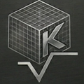

Bağımsız araçlar: planlama yazılımları, proje yönetim platformları, iletişim kanalları, dijital tablolar. Her biri kendi bağlamında değerlidir. Ancak bu araçların ortak bir omurgası yoktur.
Kurumsal sistemler: büyük ölçekli firmalar için kaynak sistemleri ve sektörel platformlar. Bir omurga sunar. Ancak sektörde yaygınlaşamamıştır. Çünkü yıllar süren adaptasyon, BT departmanı ve ayrı ekip gerektirir.
Projenin sıfırıncı adımı: anayasaya uygun bir tasarım kurulur. Her proje benzer kalıplardan başlar.
İş akışının görünür hâli. Hangi iş kimde, hangi aşamada, ne bekliyor — sürekli görünür.
Şantiyeden gelen her talep, kayıt altında ve sahibine bağlı. Talep, bir mesaj değildir. Bir kayıttır.
Onay zincirleri, fiyat geçmişi, tedarikçi bilgisi — tek yerde, denetlenebilir.
Projenin maliyet sağlığı, anlık görünür. Sapma sonradan değil, oluşurken fark edilir.
Mevcut araçlarıyla çalışmaya devam edebilir. K3 Matrix onların verisinin omurgasıdır, yerine geçen değildir. Mevcut yatırımlar korunur, veri tek çatı altında buluşur.
K3 Matrix'in dahili modülleriyle tek başına çalışabilir. Ek bir araca ihtiyaç duymadan, disiplini kurabilir. Sade, güçlü, bütünleşik.
Bir karar verildiyse — kim verdi, ne zaman verdi, hangi alternatifleri değerlendirdi — bu sistemde kalır. 'Hatırlamıyorum' cevabı, bir kayıt yöntemi değildir.
Plan, ihtiyaca göre yapılan bir öneri değildir. Proje yaşam döngüsünün doğal bir parçasıdır. Sistem, plan oluşmadan ilerlemeye izin vermez.
Bir iş bir karar bekliyorsa, bir malzeme bir onay bekliyorsa — bu sistemde kayıt altında olmalıdır. K3 Matrix, beklemeyi yönetmeyi vadetmez. Beklemenin görünür kalmasını ilke edinir.
İnsan iradesi değerlidir. Ama denetlenmediği yerde, sorumluluktan kaçışa dönüşür. Sistem, inisiyatifi yasaklamaz. Sadece görünür kılar.
Şantiye-M kayıt ister. K3 Matrix, bu kaydın doğru, eksiksiz ve zamanında üretilmesini hedefler.